公式・メディアの新着
もっと見る ›配信元の見出しとリンクのみを自動で収集しています。タップすると元記事が開きます。
2026.10.04
速報
京都ハンナリーズで新たなスタートを切った岸本隆一「毎試合が必死、良い意味で先のことを見ないですんでいる環境にすごく感謝」
速報
緊急事態の三遠ネオフェニックスを2連勝に導く、綾部舞アシスタントコーチ兼通訳が得た代え難い経験「楽しかったと言えますね」
速報
品川愛翔「変わらなきゃいけない」県立佐賀北(佐賀県)
速報
テウ アダマ「チームへの誇りを持って戦おう」八雲学園(東京都)
速報
古巣・千葉Jとの死闘を制したアルバルク東京のディー・ジェイ・ホグ「彼らとここで対戦するのは特別で不思議な感覚でした」
2026.10.03
速報
シーホース三河のエース、西田優大の責任「安齋さんから『本当にお前は自由にやっていい』と言われました」
速報
大嶋遥佳「みんなで高め合っていける大会にしたい」県立能代科学技術(秋田県)
速報
ケガ人続出の中、クアドラプルオーバータイムの試合を落とした千葉J、富樫勇樹が「今日みたいな試合は勝ちたかった」と語る理由
速報
Bリーグ史上2度目のクアドラプルオーバータイムに突入、アルバルク東京が千葉ジェッツとの死闘を制す
2026.10.02
速報
【お詫びと訂正】「B.LEAGUE CARD~REAL CARD COLLECTION~」における選手情報(出身地)の誤りについて
速報
川崎ブレイブサンダースのアレックス・カーク(後編)「勝つことを当たり前ととらえるメンタリティが僕には染み付いています」
速報
小林春陽「みんなで話し合って、ゲームに向かっていきたい」県立秋田中央(秋田県)
速報
川崎ブレイブサンダースのアレックス・カーク(前編)「新しい環境でプレーできることは自分のキャリアを活性化してくれる」
2026.10.01
速報
横浜ビー・コルセアーズを支える森井健太(後編)「ビーコルの選手として大舞台でプレーすることに勝る達成感はない」
速報
茨城ロボッツが中村功平をインジュアリーリストから抹消、チームのオフェンスを支えてきた在籍7シーズン目の攻撃型ガード
速報
横浜ビー・コルセアーズのキャメロン・マクガスティがインジュアリーリスト入り、右大腿四頭筋損傷で2〜3カ月の離脱
速報
滋賀レイクスが佐藤瑠一シャンドレイをユース育成特別枠で登録、B1最年少出場記録を樹立した期待のガード
速報
横浜ビー・コルセアーズを支える森井健太(前編)「誰が出てもどんな状況でも自分たちのやるべきプレーを変わらずにやり切れるか」
速報
【NBA】キングス入りのベン・シモンズが完全復活を宣言「自分のプレーでチームに貢献できると感じている」
速報
9月27日のホームゲームを最後に現役を退いた茨城ロボッツの平尾充庸、プレーヤーズメンター兼クラブリレーションリーダーに就任
速報
インジュアリーリストの公示
2026.09.30
速報
「B.LEAGUE ALL-STAR B.Hope ACTION 2027 IN AICHI-NAGOYA」 B.Hope ECOリーダーズプロジェクト 実施のお知らせ
2026.09.29
速報
規約違反による制裁決定について
速報
富山グラウジーズ ダラル・ウィリス ジュニア選手規約・規程違反による懲罰について
速報
千葉ジェッツのマット・コステロが全治4〜6週間のケガ、ランドルフに続いて今シーズン早くも2人目のインジュアリーリスト入りに
2026.09.28
速報
「B.革新」の新時代を象徴するB.LEAGUE PREMIER 新チャンピオントロフィーを発表
速報
狩野百香「常に勝負にこだわります」八王子学園八王子(東京都)
2026.09.27
速報
連敗スタートと向き合う、川崎ブレイブサンダースの桶谷大HC「疑心暗鬼になるのではなく、自分たちのやっていることを信じて」
速報
ドラフト1巡目指名の歓喜から大ケガによって絶望の淵へ、滋賀レイクスの岩下准平に宿る不屈の精神「支えがあってここまで来れている」
2026.09.26
速報
橋本青空と藤原佑貴「一生懸命やるのは当然」県立広島皆実(広島県)
2026.09.25
速報
三遠ネオフェニックスの新たな中心選手へ、22歳の新鋭・湧川颯斗の覚悟「今シーズンは自分にとって本当に勝負の年」
速報
大阪エヴェッサのヴォーディミル・ゲルンが左中手骨骨折でインジュアリーリスト入り、合田怜は左後脛骨筋腱脱臼で手術を実施
2026.09.24
速報
東京サンロッカーズの山際爽吾が着実に登るトッププレーヤーへの階段(後編)「『山際って何者だ?』と言ってもらえるように」
速報
熊本県へ令和8年熊本地震に対する義援金寄付のお知らせ
速報
大型補強に成功した茨城ロボッツ、ヴィック・ローの決意(後編)「常に希望を託せる、信頼される選手になりたい」
速報
アルティーリ千葉がアジア枠にカイ・ソットを補強、昨シーズンまで越谷でプレーした身長220cmのフィリピン出身ビッグマン
速報
伊藤優月「合わせのプレーをどんどんやっていきたい」名古屋経済大学高蔵(愛知県)
速報
東京サンロッカーズの山際爽吾が着実に登るトッププレーヤーへの階段(前編)「グッドよりベター、ベターよりもベスト」
速報
大型補強に成功した茨城ロボッツ、ヴィック・ローの決意(前編)「高い前評判は誇るべき責任の重さ」
2026.09.23
速報
琉球ゴールデンキングスの新指揮官、アンソニー・マクヘンリーの信念「ここは日本のリーグ、できるだけ日本人選手を起用していく」
最終更新:
2026年10月05日 12:30
速報
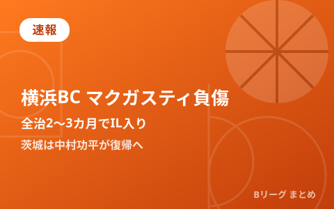
速報
横浜BC新助っ人マクガスティが負傷離脱 全治2～3カ月でIL入り、茨城は中村功平が約6カ月ぶり復帰
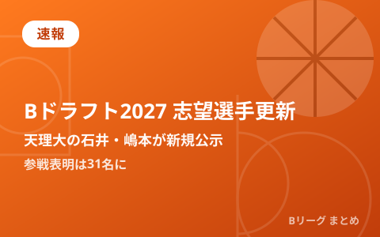
速報
【Bドラフト2027】志望選手リスト更新 天理大の石井凜太郎・嶋本昇太が新たに公示 参戦表明は31名に
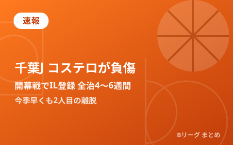
速報
千葉J、コステロが開幕戦で負傷しIL登録 全治4～6週間 今季早くも2人目の離脱に
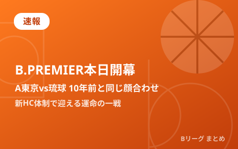
速報
B.PREMIER本日開幕 A東京vs琉球は10年前と同じ顔合わせ 新HC体制で迎える運命の一戦
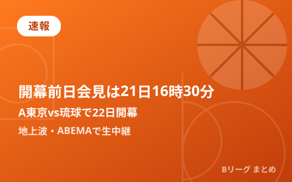
速報
B.PREMIER開幕前日会見は21日16時30分から 10年前と同じA東京vs琉球で22日開幕、地上波・ABEMAで生中継
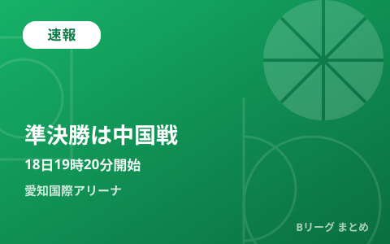
速報
男子日本代表、準決勝で中国と激突 18日19時20分から愛知国際アリーナ 勝てば大会決勝進出
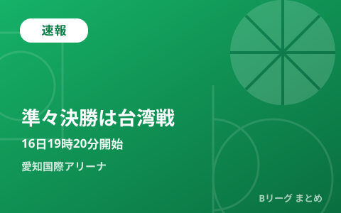
速報
男子日本代表、準々決勝の相手はチャイニーズ・タイペイに決定 16日19時20分から愛知国際アリーナで激突
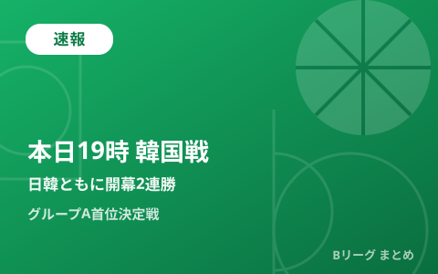
速報
男子日本代表、本日19時に韓国戦 アジア大会グループA首位決定戦 日韓ともに開幕2連勝で激突
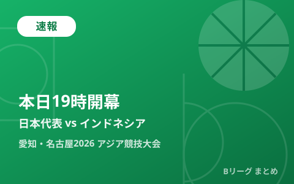
速報
【愛知・名古屋2026】バスケ男子日本代表、本日19時インドネシア戦で開幕 グループAは韓国・サウジアラビアと同組
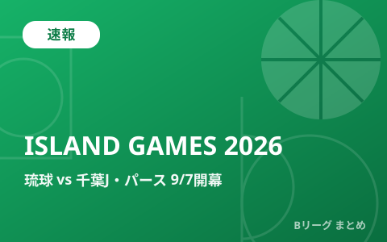
速報
琉球「ISLAND GAMES 2026」9月7日開幕 千葉J・豪州パースと国際週間
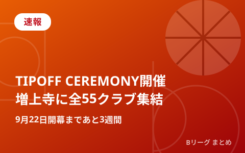
速報
「B.LEAGUE 2026-27 TIPOFF CEREMONY」増上寺で開催 全55クラブの代表選手が集結、開幕まで3週間
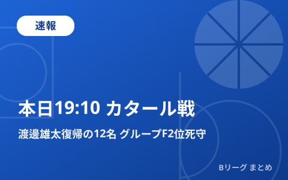
速報
男子日本代表、本日8月31日19:10カタール戦 富樫外れ渡邊雄太が復帰の12名 W杯予選2位死守なるか
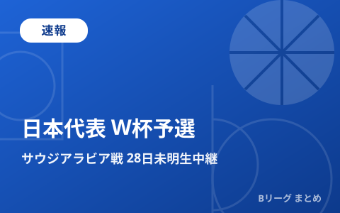
速報
男子日本代表、W杯予選Window4サウジアラビア戦は8月28日未明にABEMA・テレビ朝日系で生中継
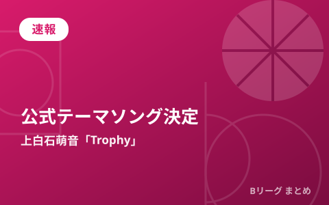
速報
上白石萌音「Trophy」がB.LEAGUE 2026-27公式テーマソングに決定
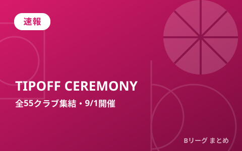
速報
「B.LEAGUE 2026-27 TIPOFF CEREMONY」出演選手発表 富樫勇樹・馬場雄大ら全55クラブ集結
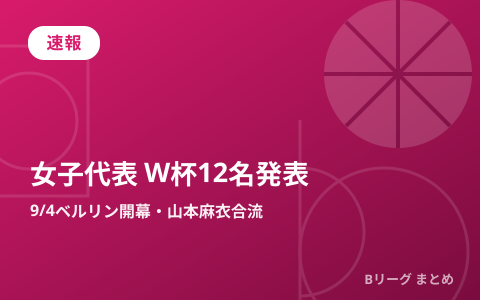
速報
女子日本代表、W杯出場12名を発表 山本麻衣は現地合流 9月4日ベルリン開幕
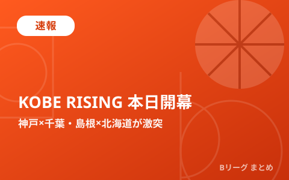
速報
「KOBE RISING -2026-」本日開幕 神戸ストークスが千葉ジェッツ・レバンガ北海道と対戦
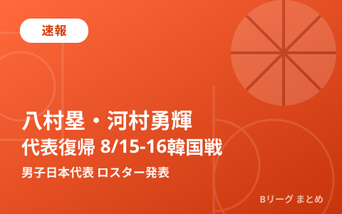
速報
八村塁がパリ五輪以来の代表復帰、河村勇輝も合流 男子日本代表 8/15･16韓国戦ロスター発表
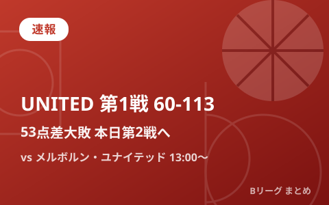
速報
B.LEAGUE UNITED 第1戦60-113大敗 本日メルボルン・ユナイテッドと第2戦
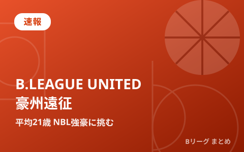
速報
B.LEAGUE UNITED 豪州遠征 平均21歳の若手精鋭がNBL強豪に挑む
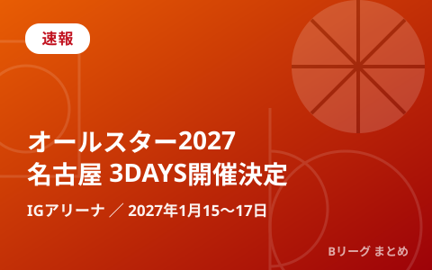
速報
Bリーグオールスター2027 名古屋IGアリーナで1月15〜17日3DAYS開催、中学生バスケ大会も同会場へ
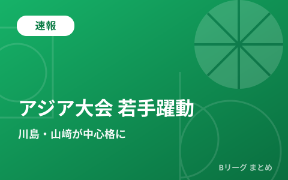
速報
アジア大会2026へ 若手躍動の男子日本代表 川島悠翔・山﨑一渉が中心格に
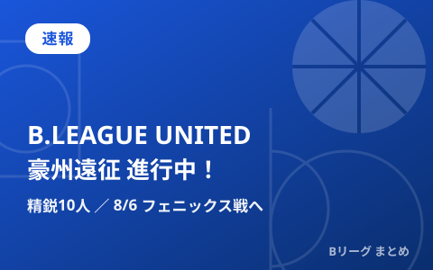
速報
B.LEAGUE UNITEDが豪州遠征中！精鋭10人が8月6日フェニックス戦へ〜2030年NBAへの挑戦
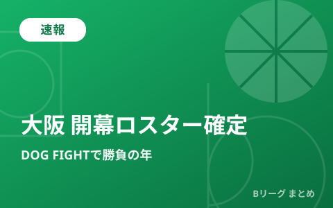
速報
大阪エヴェッサ 2026-27開幕ロスター確定 「DOG FIGHT」で結果を求める年に
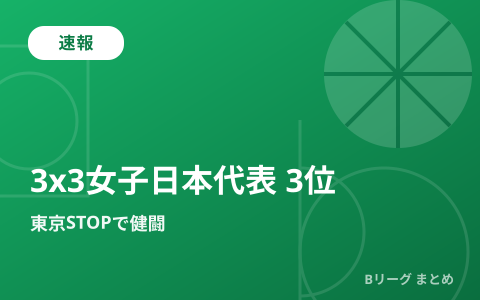
速報
3x3女子日本代表が東京STOPで3位入賞 ウィメンズシリーズ2026
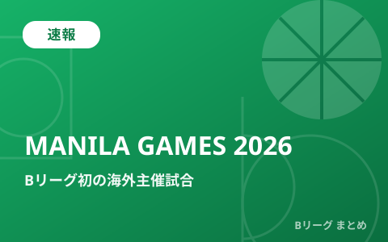
速報
B.LEAGUE初の海外主催試合「MANILA GAMES 2026」9月マニラで開催
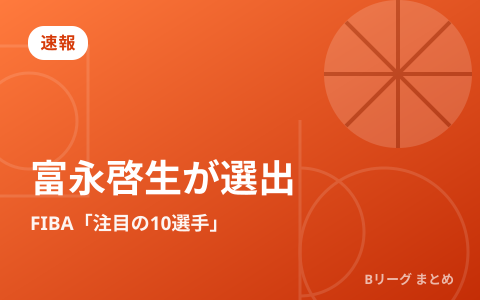
速報
FIBAがW杯アジア予選「注目の10選手」を発表 日本代表から富永啓生が選出
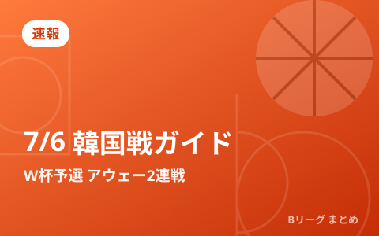
速報
7月6日 日本代表vs韓国戦 視聴ガイド W杯予選Window3アウェー2連戦の見方
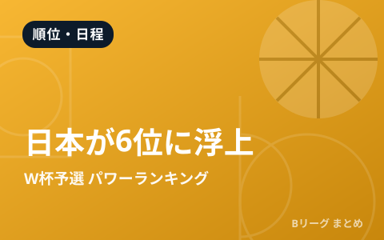
速報
FIBA・W杯アジア予選パワーランキング更新 日本は1つ上げて6位、7月のWindow3で中国に“借りを返せるか”
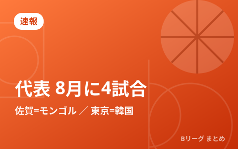
速報
男子日本代表、8月に国際試合4試合を開催へ 佐賀でモンゴル・東京で韓国と対戦
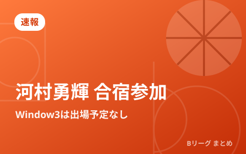
速報
河村勇輝が日本代表・第2次強化合宿に参加 7月のW杯予選Window3は出場予定なし
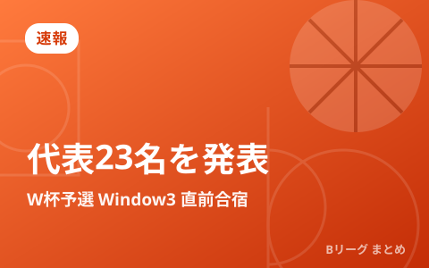
速報
男子日本代表、W杯予選Window3へ第2次強化合宿の23名を発表 7月に中国・韓国とアウェー2連戦
このカテゴリは1日3回を目安に最新ニュースを追加しています。